Framing a Data Problem
Module 2 - Data Exploration
Lecture 2.2
ASM 532, Introduction to Ag Informatics
Ankita Raturi, ankita@purdue.edu
Lecture Outline
- Why Python?
- Data structures, formats, parts
- Data in Python: dictionaries, arrays, dataframes
- The Ag Data Landscape: where data lives, and how to get it
- Assessing data quality
- Then, the rest of the session:
- Activity: frame your data problem, find your dataset, plan your data acquisition, processing, analysis, and visualization
- Lab 2
Today: the first half of the lifecycle
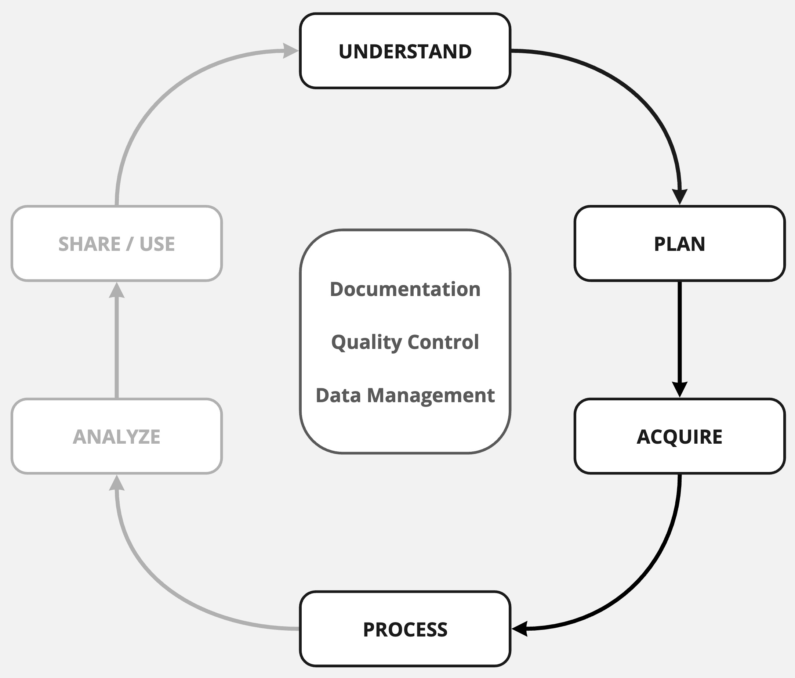
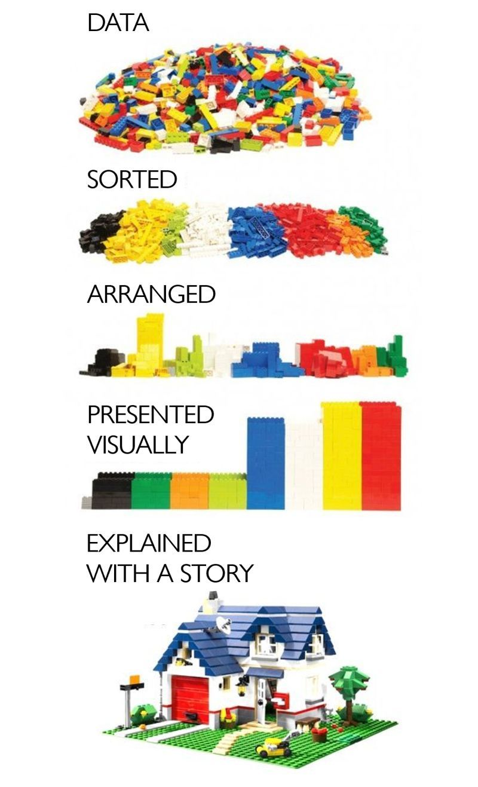
Image by Mónica Rosales Ascencio via Ravi Kudesia
Why Python?
- "Python is an interpreted high-level general-purpose programming language.
- Its design philosophy emphasizes code readability with its use
of significant
indentation.
- Its language constructs as well as its object-oriented approach aim to
help programmers write clear, logical code for small and large-scale projects.
- Its language constructs as well as its object-oriented approach aim to
- Python is dynamically-typed and garbage-collected.
It supports multiple programming paradigms, including:- structured (particularly, procedural),
- object-oriented and
- functional programming.
- It is often described as a "batteries included" language due to its comprehensive standard library"
...Learn More
- Readability
- Dynamic Typing & Garbage Collection
- Interpreted Language
- Portability
- Community
- PyPI Library of Resources
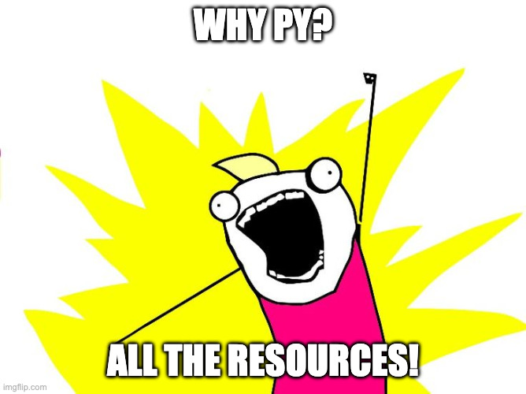
Structure of Data
Unstructured:
Free-form text/numbers/images.
Semi-structured:
Tables, Labeled Sections
Structured:
Database
Data Formats
| Text | TXT: Text file, unformatted |
DOC: Word document, formatted text |
| Tables | CSV: Delimiter (Comma, Tab) Separated Values. |
XLS: Excel spreadsheet |
| Self Describing | JSON: Attribute:Value pairs & arrays {"name":"Ankita"} |
XML: Markup Language used to structure data (like HTML!) |
| Other | Docs/Images: PDF, PNG, JPG | Geospatial Vector: KML, GeoJSON, Shapefile |
Parts of Data
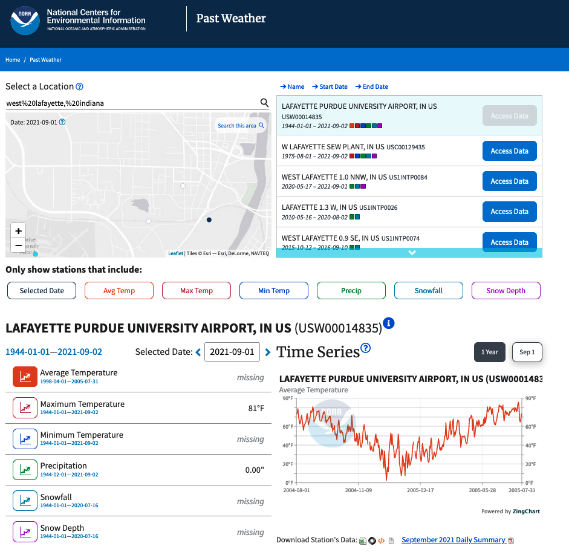
Data in CSV Format
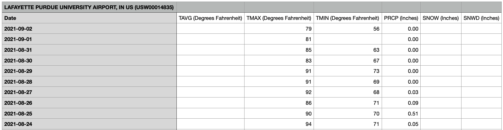
Observations = Rows.
Variables = Columns.
Metadata = data about the data
Data in JSON Format
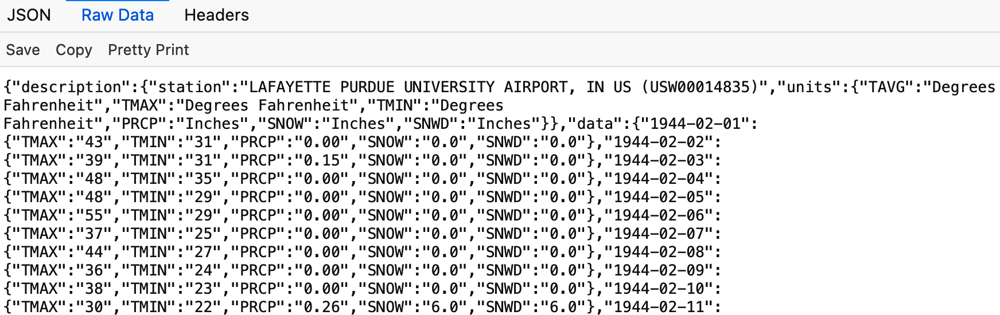
Attribute:Value Pairs.
Metadata in the header
Data in Python
A list of observations.
A dictionary is attribute:value pairs ~like JSON.
# List
years = [2021, 2022, 2023]
# Dictionary: one day
day = {"date": "2021-08-27", "tmax": 92, "prcp": 0.03}
# List + Dictionary: many days
days = [
{"date": "2021-08-27", "tmax": 92, "prcp": 0.03},
{"date": "2021-08-28", "tmax": 91, "prcp": 0.00},
]
Python Library: pandas
pandas will hold your data as a table that you can filter, group, and summarize. It has one observation per row, and one variable per column.
import pandas as pd
land = pd.read_csv("faostat-land-use.csv")
land.info()
land.describe()
land.head()
Python Library: numpy
numpy does the numerical work inside pandas.
We're mostly going to use pandas and matplotlib, so we won't cover much about numpy.
import numpy as np
yields = np.array([168.4, 172.1, 159.8, 181.3])
yields.mean()
yields.std()
np.isnan(yields).any()
Data in Python: arrays, dataframes
A numpy array holds one variable, and does maths on all of it at once.
A pandas dataframe holds the whole table: one observation per row, one variable per column.
import numpy as np
import pandas as pd
tmax = np.array([92, 91, 86, 90, 94])
tmax.mean()
weather = pd.DataFrame(days)
weather.head()
A CSV ~like a dataframe. JSON ~like a dictionary. .
The Data Lifecycle - Acquire
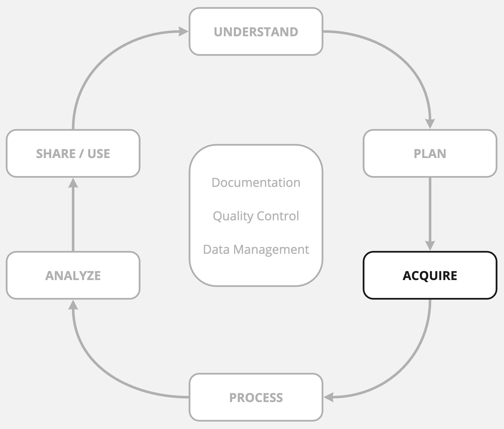
Some Public Data Sources
- US Food & Ag: USDA Statistical Service, US Ag Data Commons
- Global Food & Ag: FAO Global Food & Ag Data, CGIAR Global Ag Data
- Soils: US Soil Survey, Africa Soil Info Service
- Climate & Earth: NOAA Climate Data, USGS Water Data
- Imagery: NASA Earth Observations
- Plants: USDA PLANTS Database
- Geospatial: USGS GIS Data, Watershed Boundary Dataset, Geospatial Data Gateway
- Economic: USDA Economic Research Service, World Bank
- Health & Nutrition: USDA Food & Nutrition Service Data, WHO Public Health Data
What other kinds of data would you go looking for?
EXPLORE THIS LIST for activity + lab.
Data Acquisition Methods
- BYO data: collect it yourself.
You design data collection protocols; you are responsible for all errors. - Get data: browse and direct download.
View, explore, and take out data hot-to-go. - Get via Application Programming Interface (API).
Repeatable, computational REQESTS for data
Python Library: requests
requests lets you programmatically acquire data using an API.
import requests
url = "https://quickstats.nass.usda.gov/api/api_GET/"
params = {"key": API_KEY, "commodity_desc": "CORN",
"year": "2025", "format": "JSON"}
r = requests.get(url, params=params)
r.json()["data"][0]
Data Acquisition Methods: Examples
- View data: CroplandCROS
- Get data: Cropland data download
- Get data via API: NASS Quick Stats API
The BIG questions: How will this data change? Can I access it next year? Same way? Is perennial data access guaranteed? Is it out of date? Does it matter?
Assessing Data Quality
Sixteen dimensions!!
Which of these matter for your work, your lab dataset?
- Accessibility
- Appropriate amount of data
- Believability
- Completeness
- Concise representation
- Consistent representation
- Ease of manipulation
- Free-of-error
- Interpretability
- Objectivity
- Relevancy
- Reputation
- Security
- Timeliness
- Understandability
- Value-added
Pipino, Lee & Wang 2002, Data Quality Assessment, Communications of the ACM 45(4), 211-218.
The Data Lifecycle - Understand, Plan
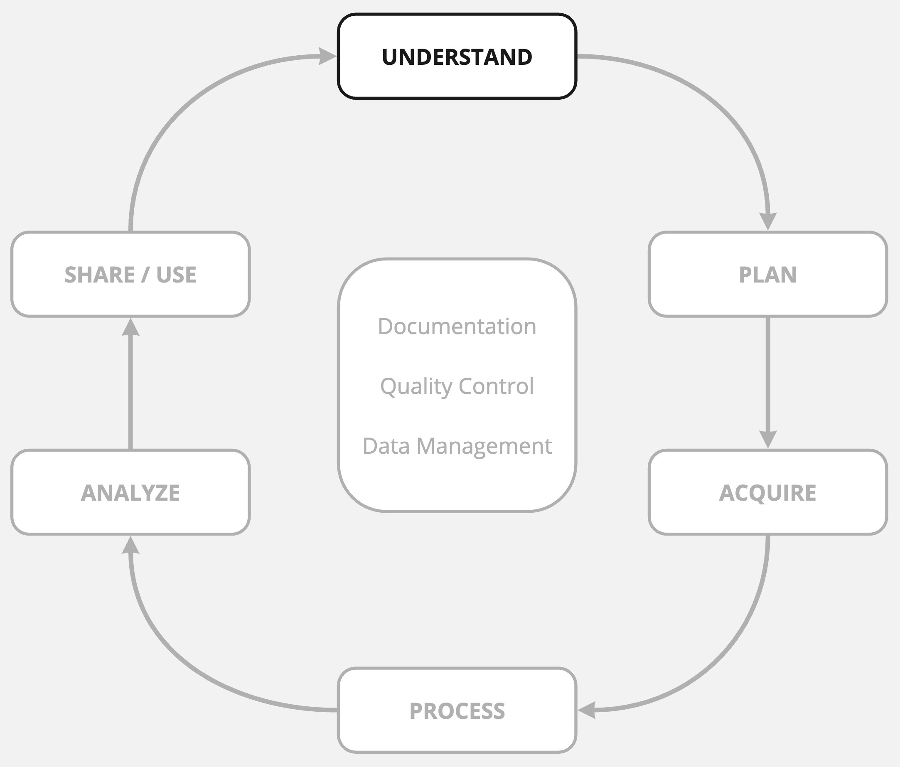
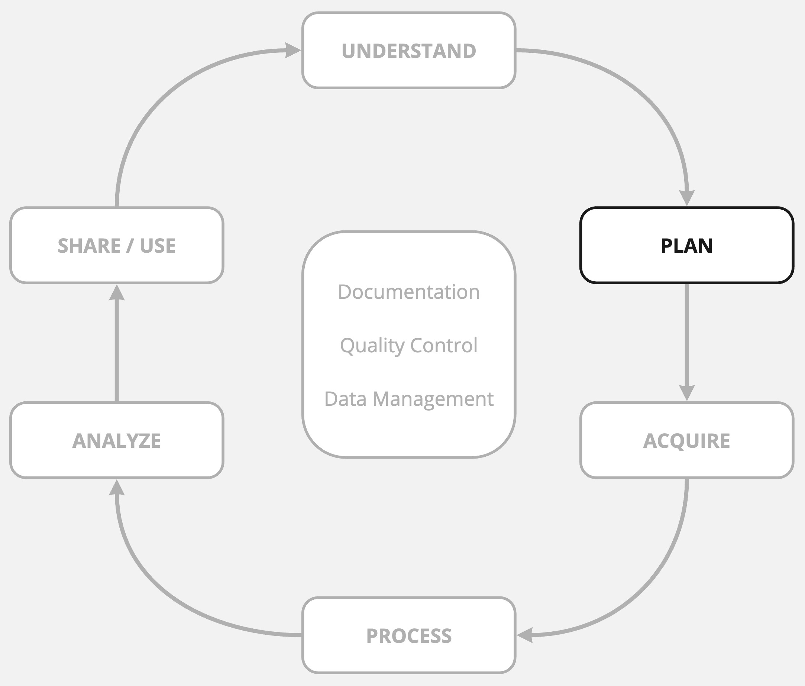
Framing your DATA problem
Understand: domain space
- What is the problem/question?
- What is the goal?
- Who are the actors? What are their needs?
- What data are required?
Plan: solution space
- How will data be collected/acquired?
- How will you process and analyze it?
- How will the data be used and/or shared?
- How will you handle documentation, data management, quality control?
You have this as a handout.
Tracking Pests at Luna Orchard
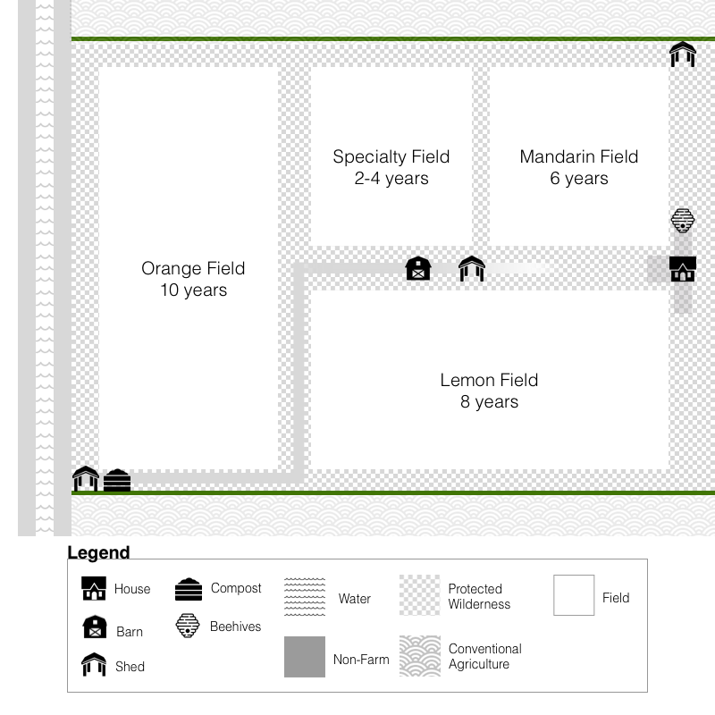
Matthew Weinert/AQIS, CABI
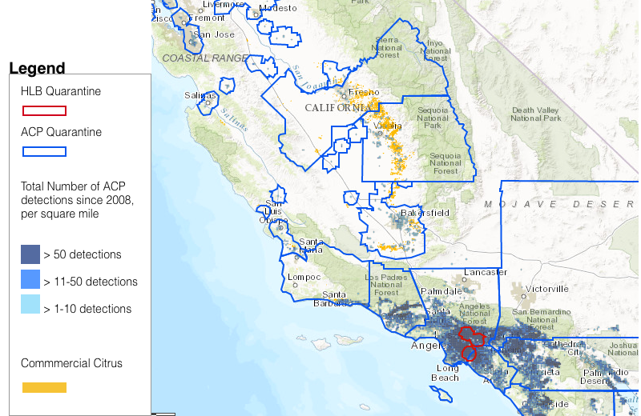
Asian Citrus Psyllid quarantine zones, California Department of Food and Agriculture
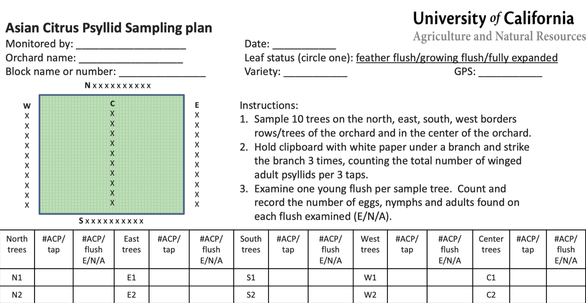
Sampling plan: University of California Agriculture and Natural Resources
Pest Tracking as a DATA problem
- Problem: citrus greening?
- Actors: farmers, consultants, govt /APHIS?
- Goals: track pests, identify disease, report status
- Data: observations, samples, photos, recordings, plant material
- Collect: tap samples, visual survey, …?
- Used for: ...decision support?
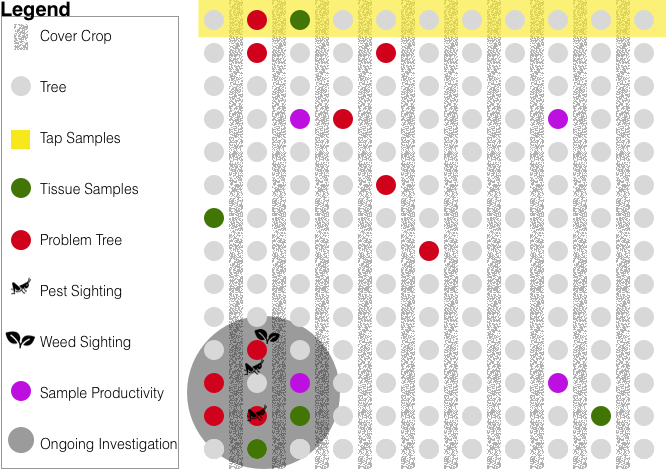
In-Class Activity -> Lab 2 [30 mins]
What problem / dataset would you like to work with?
- Work through the handout
- Find a dataset that would answer step 3. See: public data sources slide, or anywhere else, or ask!
- Test the download. Can you actually get the file? What format is it in? Does it have the variables you need?
- Write the plan. Where the data is, how you'd get it, what shape it arrives in, and what you'd have to do to it. Downloading the data will help you check the feasibility of your plan.
No problem of your own yet? Use the default dataset from the lab and practice the planning on that.
Activity: Show Me the Data!
Visit: http://www.fao.org/faostat/en/Let's explore.
- Navigate to "Land Use" data found under "Land, Inputs, and Sustainability".
- What are the different ways in which I can download Land Use data?
- How many categories of "metadata" are associated with these data? Anything interesting?
- The tool offers a "Visualization" tab. Using this can you answer the following:
- Between 2010 & 2019, which 5 countries have the largest area of land classified as "Agricultural Land"?
- Let's try to reproeduce some of these graphs.
- Let's check out how these variables are defined and the data standardized:
- What is the definition for the data item "Agricultural Land"?
- Navigate to "Selected Indicators". These are some preset visualizations that
describe key indicitors of food
- Between 2018 & 2020, what is the number of moderately or severely food inscecure people in the US?
- Can you download this data directly to reproduce the graph?
License
-

Introduction to Agricultural Informatics Course by Ankita Raturi, Purdue University is licensed under a Creative Commons Attribution-NonCommercial-ShareAlike 4.0 International License.
- You are free to:
- Share — copy and redistribute the material in any medium or format
- Adapt — remix, transform, and build upon the material
- Under the following terms:
- Attribution — You must give appropriate credit, provide a link to the license, and indicate if changes were made. You may do so in any reasonable manner, but not in any way that suggests the licensor endorses you or your use.
- NonCommercial — You may not use the material for commercial purposes.
- ShareAlike — If you remix, transform, or build upon the material, you must distribute your contributions under the same license as the original.
- No additional restrictions — You may not apply legal terms or technological measures that legally restrict others from doing anything the license permits.